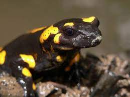
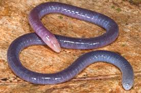
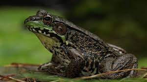
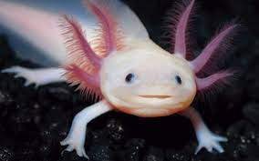
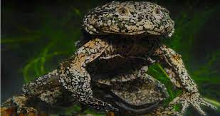

SALAMANDRA

La salamandra común (Salamandra salamandra) es una especie de anfibio urodelo de
la familia Salamandridae. Es el más común de los urodelos en Europa.
De hábitos terrestres, únicamente entra en el agua para parir, y muchas
subespecies lo hacen en tierra muchas salamandras respiran a través de la piel
debido a que carecen de pulmones y de branquias. Es necesario que la piel esté
húmeda para poder respirar a través de ella. Es un urodelo inconfundible,
de fondo negro y manchas variadas amarillas muy intensas que pueden llegar a
cubrir la casi totalidad del cuerpo.
Características
- Piel lisa.
- Las branquias son patentes y plumosas.
- Miden de 20 y25cm de longitud total .
- Es un animal de costumbres nocturnos.
- Es de color negro con circulos de color anaramjado.
Pagina Principal

CECILIAS
Los gimnofiones o Gymnophiona o cecilias son anfibios grandes sin patas,
con forma de lombriz, principalmente de regiones tropicales húmedas,
exhibiendo un estilo de vida fosorial al vivir bajo el suelo.
Se encuentran en América, África, la India, Indochina y algunas otras
regiones que formaron parte de Gondwana durante el Mesozoico.
Los registros más antiguos de gimnofiones corresponden al holotipo de
Eocaecilia micropodia del Jurásico Inferior y a Rubricacaecilia del
Cretácico Inferior Hoy en día se conocen 204 especies vivas de cecilias.
Características
- cuerpo largo.
- cuerpo anillado.
- sin extremidades .
- llegan a medir medio metro de largo.
- no tiene patas.
Pagina Principal

RANAS
Son un tipo de anfibios caracterizados principalmente por su gran capacidad de
salto gracias a la morfología de sus extremidades posteriores, potentes y muy
desarrolladas. Los ejemplares más pequeños miden aproximadamente 8 centímetros,
mientras que los más grandes pueden alcanzar los 30 centímetros.
Se han descrito unas 6.600 especies, la mayoría de las cuales reparte su vida
entre el medio acuático y el terrestre. Se reproducen mediante huevos y se
alimentan de pequeños invertebrados. Su hábitat se distribuye sobretodo en los
bosques de las regiones tropicales, pero se pueden encontrar algunas hasta en
las regiones subárticas. Las ranas se distinguen de los sapos básicamente por
su piel, que en el caso de los sapos presenta algunas verrugas.
Características
- Tienen cinturas delgadas.
- Tiene la piel rugosa.
- Tienen unas finas estrias .
- tienen berrugas.
- Tienen cuerdas vocales.
Pagina Principal
AJOLOTE
El axolote mexicano o ajolote, Ambystoma mexicanum, es una salamandra con la
característica poco habitual de conservar sus rasgos larvales en su vida adulta.
Esta condición, que se conoce como neotenia, significa que conserva su aleta
dorsal de renacuajo -que recorre casi la totalidad de su cuerpo- y sus
branquias externas, que sobresalen de la parte trasera de su ancha cabeza en
forma de plumas.
Características
- Su color es de color negro o marron monteado, albino o blanco.
- El ajolote mexicano concerva su aleta dorsal.
- Sus branquias externas en forma de plumas sobresalen de la parte trasera de su ancha cabeza .
- Es capas de regenerar todas las partes de su cuerpo.
- Vive entre 8 a 10 años.

Pagina Principal
RANA GIGANTE

Especie de cuerpo grande, cabeza redondeada frontalmente, ancha y aplanada,
tímpano oculto. Su principal característica es la piel, que es suave muy
holgada en forma de un saco que cuelga en pliegues desprendidos. Su dorso es
muy glandular provocando, cuando la especie es cogida con la mano, la secreción
de una mucosa muy pegajosa no irritante. La piel puede ser verrugosa sobre los
costados. La coloración del dorso es variable, desde olivo claro uniforme a
oscuro con diferentes diseños que pueden variar desde motas blancas o puntos
hasta parecer grises, ventralmente el color es más claro y uniforme pudiendo
ser blanco, gris claro hasta anaranjado como generalmente se observa en el lago
Menor. Los dedos anteriores son libres, los posteriores semiunidos. Largo del
cuerpo mayor a 140 mm, pesan alrededor de 150g. Dependiendo del lugar de captura
el tamaño es variable habiéndose encontrado los especímenes más grandes en los
alrededores de la isla del Sol con más de 380 g
Características
- Su piel es suave y delgada.
- Dorsalmente es muy glandular.
- Tiene una secrecion mucosa muy pegajosa .
- Tienen una gran capacidad de salto.
- Su tamaño llega de 30 a 50cm.
Pagina Principal